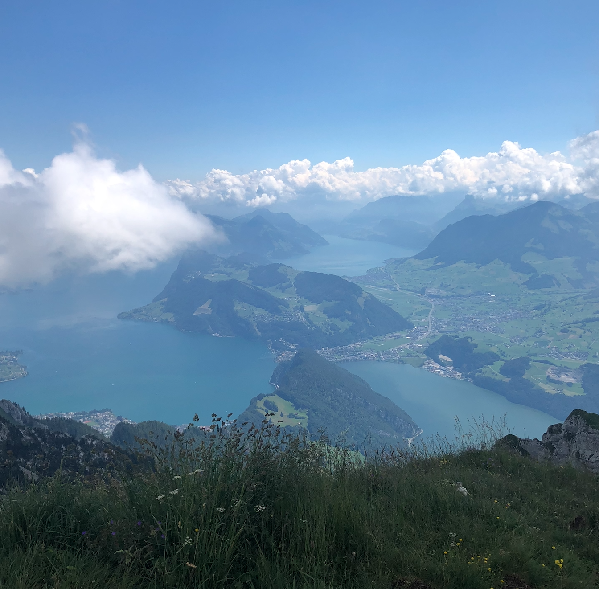

About Me
Bio
Hi! I’m Ngaio Hawkins. I’m a senior Computer Science major at Clarkson University. My coding expertise is in C++ and Java but I have worked with a myriad of other languages like C, JavaScript, Kotlin, CSS, HTML and more. I also have worked in web development, using platforms such as Squarespace and Weebly. This work enabled me to gain knowledge on how to work with clients and translate their needs/requirements into practical formats. I had an internship this summer with OpenIAM that helped me learn how to work within a team to develop identity and access management software. I created documentation on interacting with OpenIAM’s REST API using Java and learned about Postman/utilizing Maven libraries. Outside of computer science, I have been playing team sports my entire life (mainly soccer and basketball), play trumpet and enjoy watching films.
Resume
SUMMER 2024
Identity & Access Management Engineer Intern, OpenIAM
[+] Learned how to install the OpenIAM IGA platform in an Ubuntu 22.04 development environment by following the installation documentation written for new incoming Engineers. Suggested updates to documentation along the way to make the process smoother going forward.
[+] Mentored by senior engineers who assisted with resolving issues with the Linux and IntelliJ IDEA development installation from verifying the initializing of environment variables, to debugging Docker containers startup issues, problems with accessing the Hashicorp vault, to debugging network connectivity issues with the etc/host file entries.
[+] Documented a section of the Developer Guide called “Getting started with Java” (https://docs.openiam.com/docs-4.2.1.10/developerguide/2-api/3-java) which included writing Java code, utilizing Postman, REST API, and Maven JSON libraries. Sections included: Create an authentication provider in OpenIAM, Granting authorization to the API, Creating and searching for users, API calls examples, Enabling and disabling users
SUMMER 2023
Website Developer, Wingnut
[+] Migrated Wingnut’s online store from Drupal to Squarespace
[+] Modernized the look and feel
[+] Simplified the user experience
Website Developer, Cat’s Tail Marathon
[+] Migrated the Cat’s Tail Marathon website from WordPress to Weebly
[+] Redesigned it to have a mobile-compatible user experience
SUMMER 2022
Waitress, Garden House Restaurant
[+] Greeted and seated customers, presented menus, took customer orders, noting special requests and dietary needs for the kitchen.
[+] Addressed customer complaints, and served food promptly.